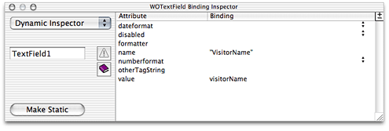

JavaServer Pages
JavaServer Pages (JSP) is a specification that describes what a servlet-based content creation system should do. One of its main purposes is to facilitate the creation of dynamic Web pages.
You can directly access WebObjects components in your JSP pages. These components can be WOComponents or WODirectActions. This allows you to create JSP-based applications that take advantage of WebObjects technologies, such as Enterprise Objects.
When your servlet container receives a request addressed to a JSP page, the container reads the .jsp file and compiles it into a workhorse servlet that processes the HTTP requests and produces responses to them.
This chapter addresses the following topics:
“JSP Page Writing Guidelines” introduces the custom tag library that your JSP pages must include to be able to access WebObjects components.
“Developing a JavaServer Pages–Based Application” walks you through the steps needed to create a simple JSP-based application.
“Passing Data From a JSP Page to a Component” explains what you need to do in order to pass data from a JSP page to a WebObjects component or direct action.
“Using WebObjects Classes in a JSP Page” shows you how to write JSP pages that use WebObjects classes.
“Using Direct Actions in JSP Pages” explains how to use a direct action in a JSP page.
“Custom-Tag Reference” provides a detailed explanation for each of the tags defined in the custom tag library.
JSP Page Writing Guidelines
To be able to use WebObjects components in your JSP pages, you have to include the WOtaglib_1_0.tld custom tag library. It’s located in /System/Library/Frameworks/JavaWOJSPServlet.framework/Resources. This custom tag library uses the tag library descriptor format defined in a DTD (Document Type Definition) from Sun. This DTD is available at http://java.sun.com/j2ee/dtds/web-jsptaglibrary_1_1.dtd.
The elements you use in your JSP pages have the form <wo:elementName>. elementName indicates the type of element you want to use. For example, to use a component element within a JSP page, you add code like the following to the .jsp file:
<wo:component ...> |
... |
</wo:component> |
Version 1.0 of the custom tag library defines five tags as described in Table 2-1.
Element | Children | Description |
|---|---|---|
|
| Top-level element. Specifies the component that is used in the JSP page. |
|
| Top-level element. Specifies the direct action that is used in the JSP page. |
| None | Specifies the extra HTTP headers to be passed to the component or direct action. |
| None | Specifies the key-value pair to be passed to the containing |
| None | Specifies the form value to be passed to the containing |
For detailed information on the WebObjects custom tag library, see “Custom-Tag Reference.”
To use the wo:component or wo:directAction elements on a JSP page, you must add the following directive to the page:
<%@ taglib uri="/WOtaglib_1_0.tld" prefix="wo" %> |
When you need to access WebObjects classes or objects from your JSP page, you need to copy all the framework and application JAR files necessary into the WAR file or single deployment directory. You accomplish this by calling the initStatics method of the WOServletAdaptor class:
<% WOServletAdaptor.initStatics(application); %> |
Note that you need to invoke the initStatics method only once during the lifetime of an application. Furthermore, the method is invoked automatically anytime wo:component or wo:directAction elements are used in a JSP page.
You also need to import the appropriate packages before using the classes with the import attribute of the page directive in your JSP page:
<%@ page import = "com.webobjects.jspservlet.*" %> |
These directives need to be performed only once per page. However, additional invocations have no ill effect. Referencing classes directly is useful when using components that require binding values. For example, a WORepetition whose list attribute is bound to an array of enterprise-object instances.
This is an example of a directAction definition:
<wo:directAction actionName="random" className="DirectAction"> |
<wo:formValue key = "formKey" value = '<%= "formValue" %>'/> |
<wo:extraHeader key = "headerKey" value = '<%= "headerValue" %>'/> |
</wo:directAction> |
This is an example of a component definition:
<wo:component className="MyImageComponent"> |
<wo:binding key="filename" value='<%= "start.gif" %>' /> |
</wo:component> |
To embed dynamic elements in a JSP page, such WOConditional and WORepetition, you have to wrap them in a WebObjects component, which you then use in your JSP page.
Developing a JavaServer Pages–Based Application
This section shows you how to create a simple JSP-based WebObjects application. In it you learn how to use wo:component elements in a JSP page.
Launch Project Builder and create a WebObjects application project called
JSP_Example.In the J2EE Integration pane of the Project Builder Assistant, select “Deploy in a servlet container.”
In Project Builder, create a component called
Hello(make sure you assign it to the Application Server target). Edit the component using WebObjects Builder so that it looks like Figure 2-1.Set the servlet application directory. (See “Deploying a Servlet” for details.)
In the Finder, navigate to the Servlet Resources folder, located in the JSP_Example folder, and create a folder called
jsp.Using a text editor, create a file with the following contents:
<%-- Welcome.jsp --%>
<%@ taglib uri="/WOtaglib" prefix="wo" %>
<HTML>
<HEAD>
<TITLE>Welcome to JavaServer Pages in WebObjects</TITLE>
</HEAD>
<BODY>
<wo:component className="Hello">
</wo:component>
</BODY>
</HTML>
Build the JSP_Example project (if necessary, restart your servlet container).
You should now be able to connect to your application. In Tomcat, you use the following URL:
http://localhost:8080/JSP_Example/jsp/Welcome.jsp |
A page similar to the one in Figure 2-2 should appear in your browser. (Otherwise, consult your servlet container’s documentation to make sure that it’s configured properly.)
Passing Data From a JSP Page to a Component
In this section, you expand the JSP_Example project to include
a JSP page, called DiningWell, that uses the Hello and FavoriteFood components to generate its output
The FavoriteFood component contains two attributes: visitorName and favoriteFood. When the DiningWell workhorse servlet receives a request, it passes two strings to the FavoriteFood component. The FavoriteFood component then uses those strings to render its HTML code.
Using a text editor, create a file with the following contents:
<%-- DiningWell.jsp --%>
<%@ taglib uri="/WOtaglib" prefix="wo" %>
<HTML>
<HEAD>
<TITLE>What to eat?</TITLE>
</HEAD>
<BODY>
<wo:component className="Hello" />
<P><P>
<wo:component className="FavoriteFood" bodyContentOnly="true">
<wo:binding key="visitorName" value='<%= "Worf" %>' />
<wo:binding key="favoriteFood" value='<%= "gagh" %>' />
</wo:component>
</BODY>
</HTML>
Note that in this case the
bodyContentOnlyattribute of thewo:componentelement is set totrue(this is the default, so you don’t need to specify a value for it). This allows you to define the FavoriteFood component as “Full document” (the default setting in WebObjects Builder) instead of “Partial document.” This way, the component can be viewed as a Web page on its own and as a component within a JSP page.For faster processing, you can set the
bodyContentOnlyattribute tofalseif you are certain that the component includes only theBODYelement and not theHTMLelement.Save the file as
DiningWell.jspinJSP_Example/Servlet Resources/jsp.In Project Builder, create a component called
FavoriteFood(make sure you assign it to the Application Server target).Edit the component using WebObjects Builder so that it looks like Figure 2-3. Make sure to add accessor methods to the
visitorNameandfavoriteFoodString keys. Also, ensure that the FavoriteFood component is set to “Full document”.When you’re done
FavoriteFood.javashould look like Listing 2-1.Listing 2-1
FavoriteFood.javaimport com.webobjects.foundation.*;
import com.webobjects.appserver.*;
import com.webobjects.eocontrol.*;
import com.webobjects.eoaccess.*;
public class FavoriteFood extends WOComponent {protected String visitorName;
protected String favoriteFood;
public FavoriteFood(WOContext context) {super(context);
}
public String visitorName() {return visitorName;
}
public void setVisitorName(String newVisitorName) {visitorName = newVisitorName;
}
public String favoriteFood() {return favoriteFood;
}
public void setFavoriteFood(String newFavoriteFood) {favoriteFood = newFavoriteFood;
}
}
Build the project and restart your servlet container, if necessary.
If you’re using Tomcat, you can view the new page in your browser with this URL
http://localhost:8080/JSP_Example/jsp/DiningWell.jsp |
The Web page should look like Figure 2-4.
This is the HTML code your Web browser receives (the listing is indented for easy reading):
<HTML> |
<HEAD> |
<TITLE>What to eat?</TITLE> |
</HEAD> |
<BODY> |
Hello, World! |
<P><P> |
Worf's favorite food is gagh. |
</BODY> |
</HTML> |
Using WebObjects Classes in a JSP Page
This section continues work on the JSP_Example project. It explains how to write a JSP page that makes use of two WebObjects classes, NSArray and NSMutableArray, to pass information to a component called MusicGenres.
Using a text editor, create a file with the contents of Listing 2-2.
Listing 2-2
InternetRadio.jspfile<%-- InternetRadio.jsp --%>
<%@ taglib uri="/WOtaglib" prefix="wo" %>
<%-- Import statements --%>
<%@ page import="com.webobjects.foundation.*" %>
<%@ page import="com.webobjects.jspservlet.*" %>
<%-- Initialize WebObjects–to–servlet-container integration system --%>
<%
WOServletAdaptor.initStatics(application);
%>
<%-- Create musical-genre list --%>
<%
NSMutableArray genres = new NSMutableArray();
genres.addObject(new String("Classical"));genres.addObject(new String("Country"));genres.addObject(new String("Eclectic"));genres.addObject(new String("Electronica"));genres.addObject(new String("Hard Rock/Metal"));genres.addObject(new String("Hip-Hop/Rap"));genres.addObject(new String("Jazz"));%>
<HTML>
<HEAD>
<TITLE>Music Available on Internet Radio Stations</TITLE>
</HEAD>
<BODY>
<wo:component className="MusicGenres" bodyContentOnly="true">
<wo:binding key="genres" value='<%= genres %>' />
</wo:component>
</BODY>
</HTML>
Note the invocation of the
initStaticsmethod of the WOServletAdaptor class. It performs the initialization of objects needed to integrate WebObjects with your servlet container (for example, adding a WOSession object to the JSPSession object).Save the file as
InternetRadio.jspin theJSP_Example/Servlet Resources/jspdirectory.In Project Builder, create a component called
MusicGenres(make sure you assign it to the Application Server target).Add the
genresandgenrekeys to MusicGenres using WebObjects Builder.genresis an array of Strings andgenreis a String. Add a setter method forgenres.Alternatively, you can add the following code to
MusicGenres.java:protected String genre;
/** @TypeInfo java.lang.String */
protected NSArray genres;
public void setGenres(NSArray newGenres) {genres = newGenres;
}
Edit the component using WebObjects Builder so that it looks like Figure 2-5.
Tell Project Builder to copy the necessary WebObjects classes to the WAR file or single deployment directory by setting the
SERVLET_COPY_JARSbuild setting toYES.Build the application and restart your servlet container, if necessary.
To view the output of the InternetRadio JSP page in Tomcat use the following URL:
http://localhost:8080/JSP_Example/jsp/InternetRadio.jsp |
You should see a page like the one in Figure 2-6.
Using Direct Actions in JSP Pages
This section shows you how to create a WebObjects component called FoodInquiry that contains a WOForm element with two WOTextFields and a WOSubmitButton. The FoodInquiry page is displayed by a direct action, which itself is invoked by a JSP page that provides the FoodInquiry component with initial values for its form elements using wo:formValue elements.
Using a text editor, create a file with the following contents:
<%-- LogIn.jsp --%>
<%@ taglib uri="/WOtaglib" prefix="wo" %>
<wo:directAction actionName="login" className="DirectAction" bodyContentOnly="false">
<wo:formValue key="VisitorName" value='<%= "enter name" %>' />
<wo:formValue key="FavoriteFood" value='<%= "enter food" %>' />
</wo:directAction>
Save the file as
LogIn.jspinJSP_Example/Servlet Resources/jsp.In Project Builder, create a component called
FoodInquiry(make sure you assign it to the Application Server target).Add the
visitorNameandfavoriteFoodString keys to the component (create accessor methods). Also add theshowFavoriteFoodaction returning the FavoriteFood component.When you’re done,
FoodInquiry.javashould look like Listing 2-3. (Note that if you use WebObjects Builder to add the keys and the action, you need to add a couple of lines of code to theshowFavoriteFoodmethod.Listing 2-3
FoodInquiry.javaimport com.webobjects.foundation.*;
import com.webobjects.appserver.*;
import com.webobjects.eocontrol.*;
import com.webobjects.eoaccess.*;
public class FoodInquiry extends WOComponent {protected String visitorName;
protected String favoriteFood;
public FoodInquiry(WOContext context) {super(context);
}
public FavoriteFood showFavoriteFood() {FavoriteFood nextPage = (FavoriteFood)pageWithName("FavoriteFood");// Set the properties of the FavoriteFood component.
nextPage.setVisitorName(visitorName);
nextPage.setFavoriteFood(favoriteFood);
return nextPage;
}
public String visitorName() {return visitorName;
}
public void setVisitorName(String newVisitorName) {visitorName = newVisitorName;
}
public String favoriteFood() {return favoriteFood;
}
public void setFavoriteFood(String newFavoriteFood) {favoriteFood = newFavoriteFood;
}
}
Edit the component using WebObjects Builder so that it looks like Figure 2-7.
Bind the Submit button to the
showFavoriteFoodaction.Enter
Food Inquiryas the component’s title.Enter "
VisitorName" as the value for thenameattribute of the WOTextField that corresponds to the Visitor Name label.Enter "
FavoriteFood" as the value for thenameattribute of the WOTextField that corresponds to the Favorite Food label.
Add the
loginActionmethod (listed below) to the DirectAction class.public WOActionResults loginAction() {FoodInquiry result = (FoodInquiry)pageWithName("FoodInquiry");// Get form values.
String visitorName = request().stringFormValueForKey("VisitorName");String favoriteFood= request().stringFormValueForKey("FavoriteFood");// Set the component’s instance variables.
result.setVisitorName(visitorName);
result.setFavoriteFood(favoriteFood);
return result;
}
To view the output of the LogIn JSP page, use the following URL (restart your servlet container, if necessary):
http://localhost:8080/JSP_Example/jsp/LogIn.jsp |
You should see a page like the one in Figure 2-8.
Custom-Tag Reference
The following sections provide details about the custom WebObjects JSP tags that WOtaglib_1_0.tld defines.
wo:component
You use this element to embed a WebObjects component within a JSP page. Table 2-2 describes its attributes.
wo:directAction
You use this element to embed a direct action within a JSP page. Table 2-3 describes its attributes.
wo:extraHeader
The wo:extraHeader element specifies a key-value pair to be passed to the component or direct action as an HTTP header. A wo:extraHeader element has to be used for each header value; you can pass multiple values for one header by using the same value for the key attribute in multiple wo:extraHeader elements. If the value is not null, it must be a String. Otherwise, the corresponding header is removed from the request before it’s passed to the component or direct action. Table 2-4 describes the attributes of this element.
Attribute | Required | Description |
|---|---|---|
Yes | Specifies the HTTP header. | |
Yes | Specifies the value for the HTTP header. |
wo:binding
This element specifies a key-value pair to be passed to the component to satisfy one of its bindings. You need a wo:binding element for each of the component’s bindings. Table 2-5 describes its attributes.
Attribute | Required | Description |
|---|---|---|
Yes | Specifies the component’s binding. | |
Yes | Specifies the value for the binding. |
wo:formValue
This element specifies a key-value pair to be passed to the direct action in a query string; it must be a String. You need a wo:formValue for each item in the form. Table 2-6 describes the attributes of this element.
Attribute | Required | Description |
|---|---|---|
Yes | Specifies the form element. | |
Yes | Specifies the value for the form element. |
© 2002, 2005 Apple Computer, Inc. All Rights Reserved. (Last updated: 2005-08-11)